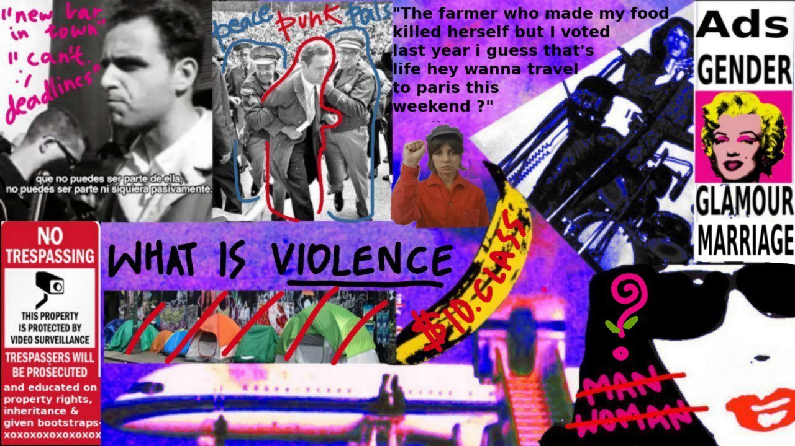

A teetering bulb of alienated dread and utopian dream
Most modern bureaucracies identify me with the name Pulkit Manocha. But more often, I'm called Pulkit. What am I? - An amorphous philistine philandering with philosophy, code, political theory, algorithms, software, and confusion. - A bundle of questions and doubts that emerge from a critical rejection of conventional social norms and institutions. - A fusion of influences, some of which cited and discussed on this website. What am I? - Not an instantiation of a platonic abstraction. Not a "software engineer", "man", "son", "_ist", or "_ian". - Not solely a consumer. Not what clothes I wear, what films I watch, what objects I purchase. - Not a solipsist. Not a singular cartesian entity emerging from vacuum. What do I currently care about? - Understanding illness and adaptations to defeat the limitations of physical pain - Crafting a political consciousness unclouded by reification and dogma - Imagining an admirable life eschewing every bourgeois injunction - Understanding violence, particularly its systemic manifestations. - The politics of contentment socially contingent upon the suffering of another. - Division of labour and what it means for my social existence. - Eschewing conventional notions of machismo (aesthetic and behavioral)
Sometimes I'm here: looking at books on Goodreads And sometimes here: spamming my flippant thoughts And sometimes here: rereading Kropotkin's appeal to the young And sometimes here: tracking music on Last.fm And sometimes here: maintaining a running thread of captivating images And sometimes here: taking notes to improve my culinary library And sometimes away. playing chess
Text: * Record of a casual chat with a friend over banal politics * Dazed phenomenological antiessentialist ramble at 3AM on a Friday morning influenced probably by terre thaemlitz's essays * Some notes on theses on feuerbach and marx from when i was 19 * Some notes on "technological somnambulism" by langdon winner from when I was 19 * On Sauve qui peut (la vie) - godard * A poem: I like fiction * godard's Sauve Qui Peut (la vie) (1980) * Unabridged version of address to culver city hall on reserving a space for a homeless shelter instead of a museum 24/09/2019 * A manifesto Sound: * experiments with bass and obese pluck on spaceship when sick * wind, rain and birds. mix. * a baby's indulgences on the keyboard of a spaceship. and another on what may or may not be music Contact: * pulkit12083 [at] iiitd.ac.in * pmanocha [at] usc.edu * LinkedIn 